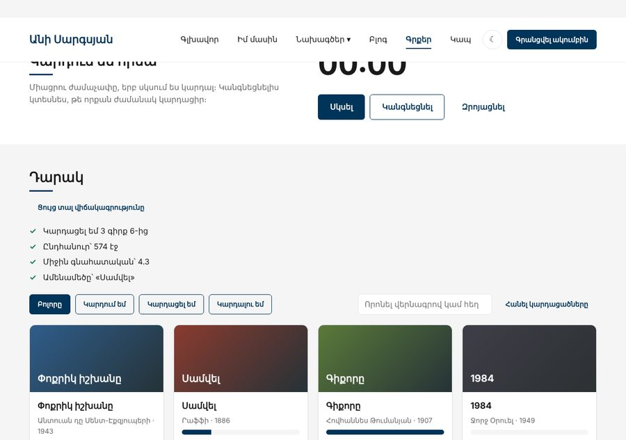

Տնային աշխատանք · JS Դաս 18 · մինի-նախագիծ
«Գրքեր» էջի չորս սովորական սկրիպտները դառնում են ES մոդուլներ․ ամեն ֆայլ արտահանում է միայն այն, ինչ պետք է դրսում, իսկ վիճակագրությունը բեռնվում է միայն կոճակը սեղմելիս։
Դաս 01–18․ type="module", export/import, import * as, դինամիկ import(), Live Server։ async/await-ը՝ միայն դինամիկ import-ի համար, ինչպես դասում։

Աշխատիր քո կայքում (կամ նախորդ դասի օրինակում)։ CSS-ը տրված է, որ կենտրոնանաս JS-ի վրա․ HTML/CSS-ը արդեն գիտես։
Starter չկա․ այս դասին փոխվում է միայն JS-ի կառուցվածքը։
file://-ով։ VS Code → Open with Live Serverstorage.js, utils.js (debounce, formatDuration), data.js (միայն հաստատուններ), shelf.js (վիճակ + գործողություններ), render.js, form.js, timer.js, modal.js, ui.jssite.js՝ ամեն էջի մուտքի կետ, pages/books.js՝ «Գրքեր» էջինըjs/
├── site.js ← բոլոր էջերում
├── ui.js ← թեմա, բուրգեր, «Վեր», toast
├── storage.js utils.js data.js
├── shelf.js ← books + գործողություններ
├── render.js form.js timer.js modal.js
├── stats.js ← դինամիկ import
└── pages/books.js ← միայն կապակցումbooks-ը արտահանված չէ։ Դրսից՝ getBooks(), getVisibleBooks() և գործողություններinitBookForm(onSubmit))pages/books.js-ում միայն listener-ներ և կապեր․ shelf.readPages(id) → refresh()const { renderStats } = await import("../stats.js")site.js, «Գրքեր»-ում՝ նաև pages/books.js| Սխալ | Ինչպես ուղղել |
|---|---|
Failed to resolve module specifier | Ուղին՝ ./ կամ ../-ով և .js-ով |
does not provide an export named | Անունը սխալ է կամ ֆունկցիան export չունի |
Assignment to constant variable՝ import արված փոփոխականին | Import-ը միայն կարդալու համար է․ փոխիր ֆունկցիայով մոդուլի ներսում |
pages/books.js-ից "./shelf.js" չի գտնվում | Ուղին ֆայլից է․ "../shelf.js" |
Սրանք Դաս 18-ի տնային աշխատանքի կետերն են։ «մինի-նախագծում» նշվածները արդեն կատարել ես վերևի քայլերում, մնացածը կատարիր առանձին ֆայլերում։
http://-ով։ մինի-նախագծումmath.js (արտահանում է add, multiply) և main.js։ Ստուգիր, որ import-ը աշխատում է։math.js-ում ներքին ֆունկցիա, որը չես արտահանում։ Փորձիր դիմել դրան main.js-ից և գրիր՝ ինչ սխալ ստացար։import { add } from "math.js" (առանց ./)։ Գրիր՝ ինչ սխալ ստացար։ Հետո ուղղիր։export default։ Ներմուծիր այն երկու տարբեր անուններով երկու ֆայլում։data.js, storage.js, utils.js, catalog.js, cart.js, main.js։ մինի-նախագծումexport-ի։ մինի-նախագծումwishlist.js, հավանածների ցուցակի համար՝ իր localStorage բանալիով։Երբ բաժին 03-ի բոլոր կետերը նշված են, բացիր օրինակը և դրա կոդը example/js/-ում։ Դաս 18-ից օրինակը բացիր Live Server-ով։ Գտիր մեկ բան, որ դու արել ես այլ կերպ, և մտածիր՝ որն է ավելի հասկանալի և ինչու։ Քո լուծումը կարող է տարբերվել և լինել ճիշտ։